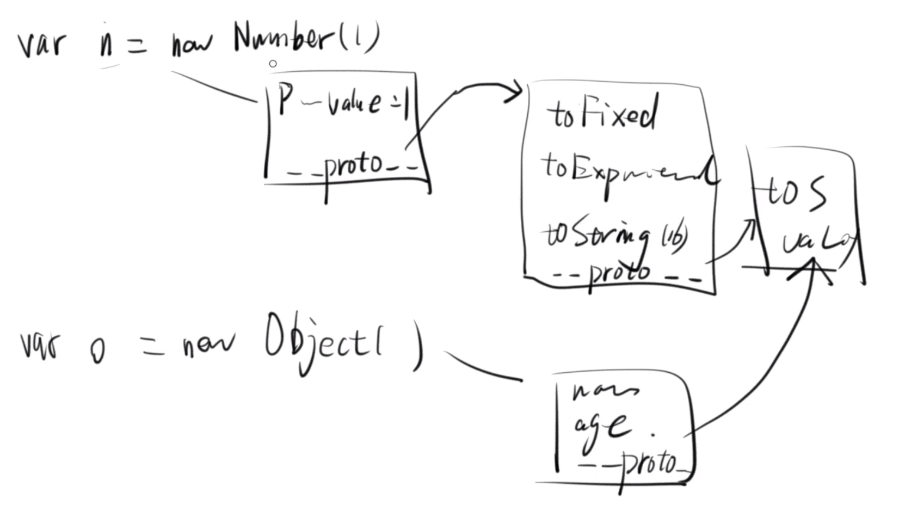
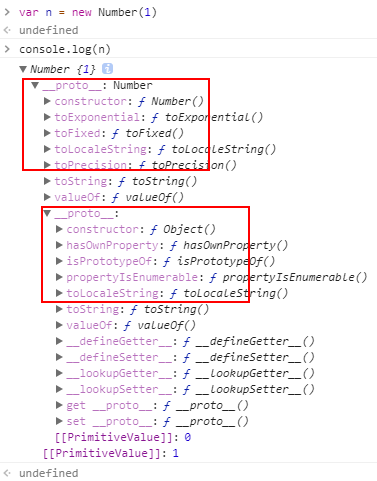
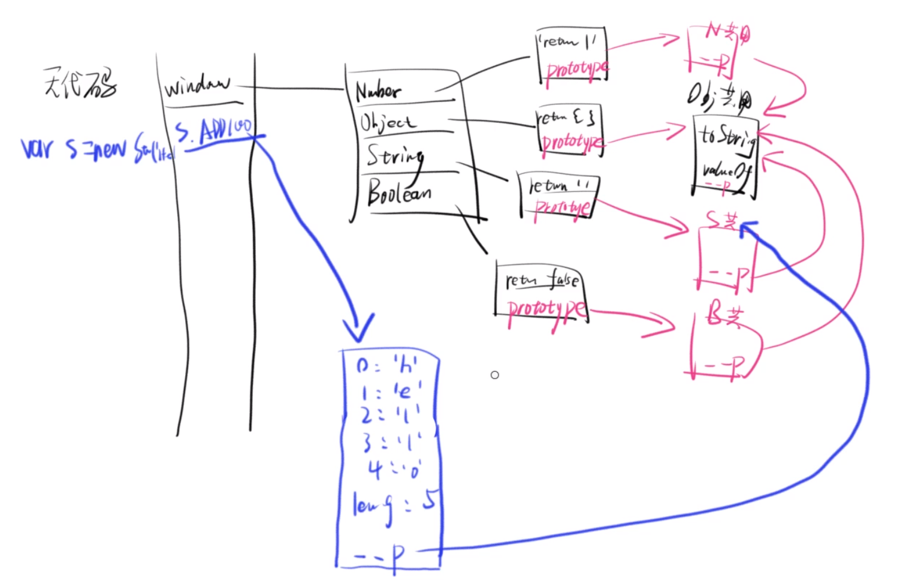

公用属性
用全局函数包装下面几个对象：
var n = new Number(1)
var s = new String('hello')
var b = new Boolean(true)
var o = new Object()
可以发现，他们都可以调用例如 toString() 和 valueOf() 等一些方法。
那如果每一个对象都自己去存有这些属性，一个明显的问题就是会造成资源的浪费。
JS 的解决办法就是，把这些函数统一放在一个对象里（暂且叫做公用属性组成的对象）。当声明一个新的对象时，就给这个新的对象添加一个隐藏的属性 __proto__，在这个属性中去存公用属性对象的 Heap 地址，这样就完成了对公用属性的引用。
Object 对象的公用属性
举个例子：
var o1 = {}
o1.name = 'JinCheng'
o1.age = 20
console.log(o1)

就会发现额外隐藏的 __proto__ 属性。
当调用 o1.toString() 时：
- 首先会看
o1是不是对象，如果不是，就临时包装成对象。 - 再看
o1自身有没有toString这个属性可供调用。 - 如果没有这个属性，就会自动去调用
__proto__对象里的属性方法。
简单的验证：
// 再声明一个对象 o2
var o2 = {
name: 'JinCheng',
age: 20
}
o1 === o2 // false 因为 Heap 地址不同
o1.toString === o2.toString // true 可以发现他们调用的其实是同一个公用属性
非 Object 对象的公用属性
以 Number 对象为例（String 对象和 Boolean 对象同理）：
var n = new Number(1)
我们知道除了上面所有对象的公用属性之外，Number 对象还有它自己的一些属性方法。
例如：toFixed() 和 toExponential() 等，这些是只有 Number 对象才公用的属性。
声明一个 Object 对象：var o = new Object() 它是不能调用这些属性方法的，因为它的 __proto__ 属性直接引用了 Object 对象的公用属性。
所以 Number 对象的 __proto__ 属性就不能直接引用 Object 对象的公用属性，否则它也就同样没有办法调用这些属性方法了。
解决办法就是，Number 对象的 __proto__ 属性要先引用 Number 的公用属性对象，又因为这个被引用的公用属性对象其实也是一个对象，所以在这个 Number 的公用属性对象里面还会再有一个 __proto__ 属性去引用 Object 的公用属性。

在控制台打印出 n，就可以看到两层 __proto__ ：

注意：
- 如果对象自身和它的公用属性对象，都定义了一个同名属性，那么优先读取对象自身的属性，这叫做“覆盖”。
- 这些同名属性不是同一个方法，他们不相等，可能有不同的用法。例如：
// Number 对象 toString 方法可以接受一个参数，表示输出的进制
var n = 10
n.toString(8) // '12'
// Object 对象 toString 方法不能接参数
var o = {}
o.toString() // "[object Object]"
// 验证
n.toString === o.toString // false
Prototype（原型对象）
上面的那些公用属性对象其实就叫做 Prototype（原型对象）。
JavaScript 规定，所有对象都有自己的原型对象（prototype）。
他们各自存在相应对象的 prototype 属性中，JS 引擎在初始化全局对象时就会构建他们。

简单的验证：
var o = {}
o.__proto__ === Object.prototype // true
var n = new Number(1)
n.__proto__ === Number.prototype // true
n.__proto__.__proto__ === Object.prototype // true
var s = new String('hello')
s.__proto__ === String.prototype // true
s.__proto__.__proto__ === Object.prototype // true
var b = new Boolean(true)
b.__proto__ === Boolean.prototype // true
b.__proto__.__proto__ === Object.prototype // true
原型链
上面图例中的，从蓝色的线到 String 的 prototype，再到 Object 的 prototype，就是一条原型链。
如果一层层地上溯，所有对象的原型最终都可以上溯到 Object.prototype。也就是说，所有对象都继承了 Object.prototype 的属性。这就是所有对象都有 toString 和 valueOf 方法的原因。
那么，Object.prototype 对象有没有它的原型呢？回答是 Object.prototype 的原型是 null。null 没有任何属性和方法，也没有自己的原型。因此，原型链的尽头就是 null。